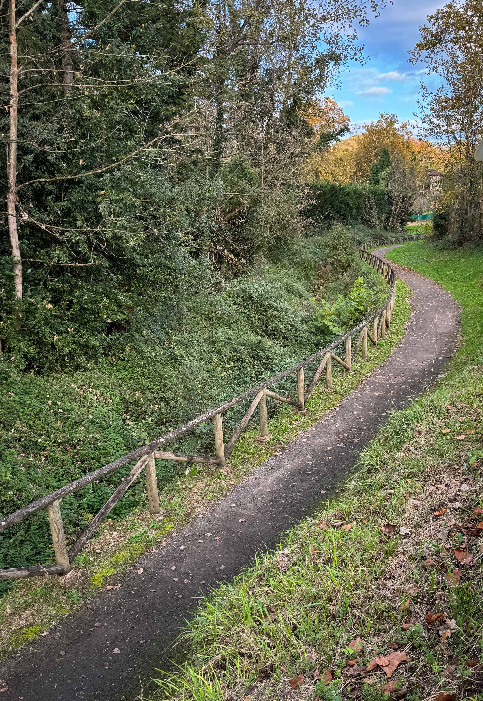

Vídeo del parque que ofrece una vista panorámica de 360º desde el punto de grabación.
Vídeo de Las Caldas con vista en 360º
Parroquia de "Les Caldes"
.png) LAS CALDAS
LAS CALDAS
Pueblo de la parroquia de San Juan de Priorio de Oviedo.
Un lugar emblemático en el que se encuentran la iglesia de San Juan de Priorio, el castillo y la villa termal.
Estas aguas ya eran conocidas desde tiempos prerromanos.
.jpg)
.png)
El Castillo fue edificado en el siglo XIX a partir de las ruinas de un castillo anterior, que había sido erigido en el siglo VIII durante el reinado de Alfonso II, quien levantó un fortín. Se trata de una fortaleza con almenas visibles, con dos grandes torres en los flancos.
Tras la construcción del castillo en su formación actual, pasó a depender del Obispado de Oviedo, siendo parte de la parroquia de San Juan de Priorio, de donde le viene el nombre. Después ha pasado por diferentes manos, hasta llegar a sus dueños actuales.
El castillo es propiedad de la familia Quijano Morenés. Esta mansión familiar, tiene un pequeño bosque en la entrada y cuenta con piscina y una calle para practicar el golf.
.png) La Leyenda del Castillo
La Leyenda del Castillo La leyenda dice que Irene, la hija de Rodrigo, señor de Priorio dueño del castillo tuvo un afaire romántico con un paje, Pablo. Cuando se enteró el padre de lo que ocurria, atacó con su espada a Pablo, quien, al verse acosado, se defendió y mató a su amo.
Irene, al enterarse de lo ocurrido, quedó destrozada y lo maldijo por haber matado a su padre. Pablo entristecido por haber perdido el corazón de su amada, se arrojó al río Gafo y murió golpeado con una roca. Según cuentan los más viejos del lugar, una roca todavía aparece manchada con sangre de Rodrigo.
.jpg)
El molino del Castillo
.png) Las tres muelas
Las tres muelas
En la orilla izquierda, en el antiguo territorio propiedad del castillo, sobrevive un molino del siglo XIX, de planta rectangular y muros levantados con mampostería vista, excepto en los encuadres de los vanos, que son de sillarejo.
Presenta cubierta a dos aguas, la teja corriente, se apoya en la armadura de madera. Este complejo, que funciona mediante canal y cubo prismático de agua, mantiene los mecanismos de las tres muelas.
La cueva de La Lluera
Un guiño al pasado
La Cueva de las Caldas es un importante reclamo. Es un espacio protegido de apenas 600 m. de profundidad, que sirve como hábitat a una colonia de murciélagos catalogados como especie amenazada. Esta caverna, a principios de
los años setenta, fue calificada, como uno de los más importantes yacimientos del Paleolítico Superior de toda la región, destacando por una amplia secuencia estratigráfica que va del Solutrense al Magdaleniense.
Explora las Otras Zonas Verdes de Oviedo

Descubre tu refugio natural en Oviedo, explora los diversos oasis y remansos de paz que la ciudad tiene para ofrecer.
Al igual que en los parques, en estas zonas verdes podrás encontrar Naturaleza | Deporte | Bienestar.
La iglesia de San Juan de Priorio data de los siglos XII y XIII. Ampliación de las capillas laterales, en el siglo XVIII. El pórtico y el baptisterio en los siglos XIX y XX.
.jpg)
Destaca el tímpano de la portada y su decoración, que representa a Cristo impartiendo la bendición rodeado de tetramorfos. Un elemento muy raro en la arqueitectura románica de Asturias.
.jpg)
.png) El Pórtico
El Pórtico El pórtico presenta cuatro arquivoltas soportadas por columnas finalizadas en capiteles decorados con hojas y el tímpano, sostenido por atlantes, representa al Pantocrátor, que está rodeado por tetramorfos.
.png) El Palomar
El PalomarEste edificio singular situado cerca de la iglesia, es el hábitat de las palomas.
.jpg)
Acceso desde la autopista A-66 (León-Oviedo) en sentido a Oviedo, 8 Km. antes de llegar a Oviedo hay que tomar la salida 36 que enlaza con la N-630 dirección Soto de Ribera-Morcín-Riosa. En el primer cruce que nos encontramos giramos a la izquierda, en dirección Soto Ribera-Mieres. Seguimos por la N-630. A 800 m. giramos a la derecha en dirección a Soto Ribera por la AS-322. Tras un paso a nivel encontramos una señal que nos indica la dirección de Las Caldas.
.jpg)
.png)
Si se accede por la autopista A-66 (Oviedo-León) procedente de Gijón, Avilés o Santander debemos, antes de llegar a Oviedo, en la bifurcación situada a 5 Km., tomar la dirección Oviedo Ronda Interior y a continuación tomar la salida 31 Grado-La Espina. Una vez en ella, tomamos la salida 4, N-634, Oviedo Oeste. Cruzaremos dos rotondas en las cuales debemos continuar dirección Grado-La Espina. A 300 m. giramos hacia la izquierda: dirección Las Caldas, por la AS-322.
Reserva Natural Parcial
.png) "Las Caldas"
"Las Caldas"
Yacimiento prehistórico, declarado Reserva Natural Parcial, a pocos km. de Oviedo.
Ecosistema subterráneo donde destaca su extradordinario yacimiento prehistórico de los periodos solutrense y magdaleniense.
En él podrás encontrar | Naturaleza | Deporte | Historia.
.jpg)
Naturaleza y Salud
El poder de las Aguas Termales
Espacio Protegido
.png) Cueva de Las Caldas
Cueva de Las Caldas
La Reserva abarca una zona de protección de 45 hectáreas. La cavidad principal de la Cueva, es de 5 m. de anchura y posee tres entradas.
El desarrollo del complejo es sencillo, desde la entrada principal, un estrecho paso conduce a la galería del río subterráneo. En época de crecidas, parte del caudal rebosa. Aguas arriba, la galería se hace más amplia y con un desarrollo lineal, sin apenas ramificaciones.
En su tramo medio aparece la sima de la Figalina, que enlaza con la entrada superior. Siguiendo la galería llegamos a un punto en que se hace impenetrable y solo la corriente de agua accede a la cavidad.
En el interior de la cueva destaca la abundante presencia de murciélagos.
Tradición balnearia milenaria
.png) Relax y Salud
Relax y Salud
Desde hace miles de años, la zona es un vergel que permitía la adaptación y superviviencia de los primeros pobladores de la Asturias más primitiva.
No sería hasta el siglo XVIII cuando las aguas que brotan de la piedra caliza y se vierten en el río Gafo, fueran descubiertas como aguas minero-medicinales con importantes propiedades.
Perfectas para combatir enfermedades respiratorias, coronarias, aparatos excretores, reuma o el asma, entre otros. Todo esto lo conseguían estas aguas carbonatadas que brotan del propio manantial.
Las Caldas
La puerta de la historia
.jpg)
Las Caldas
Castillo de ensueño
.jpg)
Las Caldas
Ideal para el deporte
.jpg)
Las Caldas
Torreón con vistas
.jpg)
Las Caldas
Aguas terapéuticas
.jpg)
Surgencia
Una "surgencia" es un punto donde el agua subterránea fluye naturalmente hacia la superficie terrestre. Esto ocurre cuando el agua se encuentra con una capa de roca impermeable y se ve obligada a salir a la superficie.
Las surgencias son importantes porque crean ambientes húmedos que son ideales para una variedad de plantas y animales. Además, pueden tener propiedades termales, lo que las hace aún más valiosas tanto desde un punto de vista ecológico como para el bienestar humano.

Salud y deporte
.png) En la Villa Termal
En la Villa Termal
Este lugar es muy
popular para diversas actividades deportivas.
Ruta Fuso de la Reina.
Campo de golf.
Piscina pública.
Descenso en canoa del río.
Ciclismo.
Diversas actividades en centro deportivo.
La senda más grande del municipio
.png) Las Caldas
Las Caldas
.png)
La Ruta Fuso de la Reina, comienza muy cerca de Las Caldas.
Se ha convertido en destino de numerosos caminantes y ciclistas que recorren una senda peatonal que aprovecha el antiguo trazado del ferrocarril. Es una vía verde de más de 25 km. que transcurre entre los concejos de Oviedo y de Santo Adriano.
En él podrás encontrar | Descenso en canoa | Actividades al aire libre |
Un lugar ideal para caminar al aire libre.
.jpg)
.jpg)
Una senda para el deporte
Deporte en Fuso la Reina
La Ruta Fuso de la Reina para completarla hay que atravesar 8 túneles y 3 puentes. La ruta conecta con la Vía Verde: la Senda del Oso a la altura de Fuso, a través del trazado ferroviario original y una serie de caminos rurales. En diversos puntos han sido instaladas mesas con bancos para poder descansar o pararse a comer/merendar.
.jpg)
.jpg)
.png) Deportes
Deportes
.jpg)
.png)
El descenso en canoa del río Nalón discurre entre los pueblos de Las Caldas, dónde nacen las aguas termales, y Trubia, que alberga la fábrica de armas de Santa Bárbara. Una actividad ideal para los amantes de los deportes acuáticos, la aventura y la observación de aves y animales. Es una zona con mucho caudal, con alrededor de 6 minirrápidos, zonas de olas y zonas mansas.
.png)
El campo Municipal de Golf de Las Caldas fue inaugurado en el año 2000 y consta de 18 hoyos, par 71 con un recorrido de 5678 metros. El juego se encuentra diferenciado en sus dos recorridos por la orografía sobre el que se encuentra. Uno transcurre por la parte baja del valle, en la que discurre el río Gafo. En la parte superior, situada al norte del campo, las calles requieren de una técnica diferente, obligando a que el juego se desarrolle con distintas estrategias y con varias probabilidades en cada hoyo.
.jpg)
Es un lugar idóneo para disfrutar del ciclismo, donde hay diferentes distancias e intensidades. Desde un tranquilo paseo por la Senda del Oso o un recorrido llano pasando por la vía verde de Fuso de la Reina hasta la subida al Angliru. La joya de la Vuelta a España.
La Pista Filandesa de Oviedo es un recorrido natural que ofrece a sus visitantes la oportunidad de desconectar y sumergirse en un entorno de gran belleza. Este sendero serpenteante, rodeado de vegetación y vistas panorámicas, es ideal para quienes disfrutan del deporte al aire libre, el senderismo y la tranquilidad de la naturaleza.
En nuestro video, te invitamos a recorrer la Pista Filandesa y descubrir cada uno de sus encantos. A lo largo del trayecto, podrás ver cómo este camino se ha convertido en un espacio imprescindible para los amantes de la actividad física y el bienestar en Oviedo. Sumérgete en su atmósfera tranquila y déjate inspirar por el entorno que hace de la Pista Filandesa un lugar único en la ciudad, perfecto para disfrutar de la paz que brinda el contacto directo con la naturaleza.
Caminar al lado de la Historia
Caminar al aire libre es bueno para la salud, pero hacerlo rodeados de historia y ver los cambios producidos a lo largo del tiempo en un entorno natural es inigualable. Y sobre todo, después de tanto esfuerzo apetece relajarse en las aguas termales.
Historia y Bienestar
Otro uso de la línea ferroviaria
Los trenes ya no recorren el valle, reconvirtiendo su línea férrea en una senda verde que conecta el Parque de Invierno de Oviedo, con los valles del Trubia.
Los amantes del deporte de las dos ruedas encuentran en Las Caldas un espacio único donde practicar este deporte en contacto con la naturaleza, con la sierra del Aramo y el místico pico Monsacro.
Sobre Nosotros
Somos un equipo de desarrolladores web dedicados a crear experiencias únicas.
Nos
esforzamos por transformar la visita a los parques por excelencia de Oviedo en experiencias
digitales visualmente atractivas, intuitivas y fáciles de usar.
© Copyright 2025.
Todos los derechos reservados.

.jpg)
.jpg)
.jpg)
.jpg)
.jpg)
.png) Otoño y su Colorido
Otoño y su Colorido.jpg)
.jpg)
.jpg)